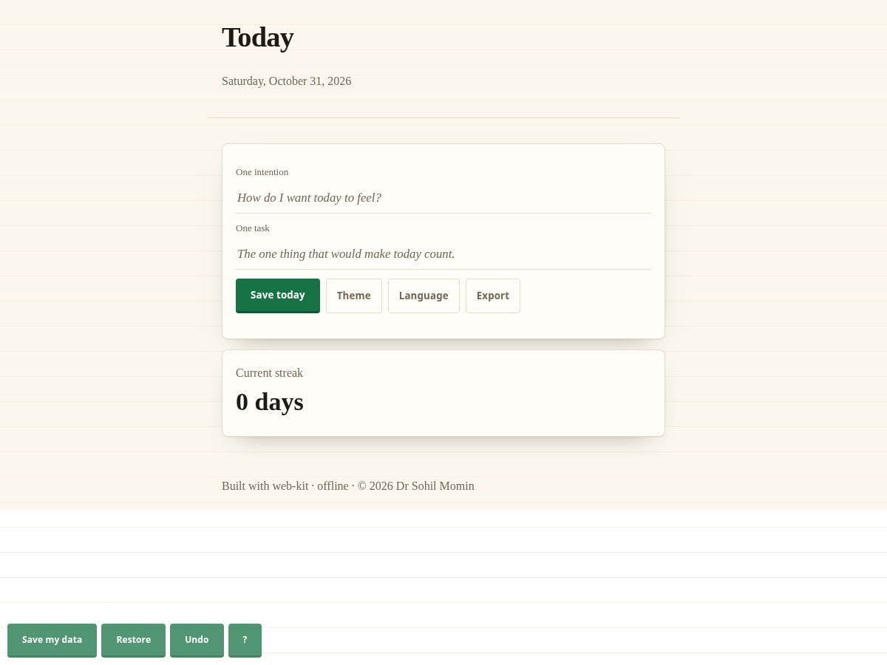

One card for the day: your date, one intention, one task, and a streak. It keeps working when the connection drops.
Download
Android APK · 694 KBWindows EXE · 8.4 MBLinux · 20.8 MB
From the latest release · free · no account, no telemetry.
